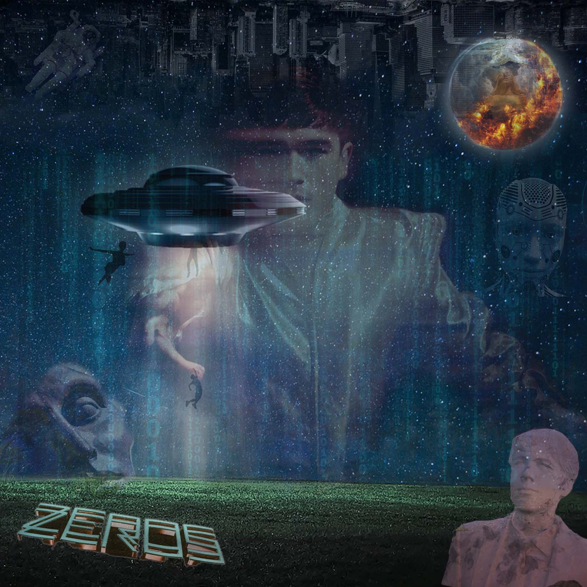
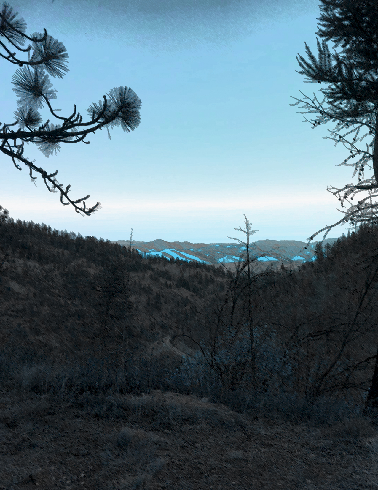
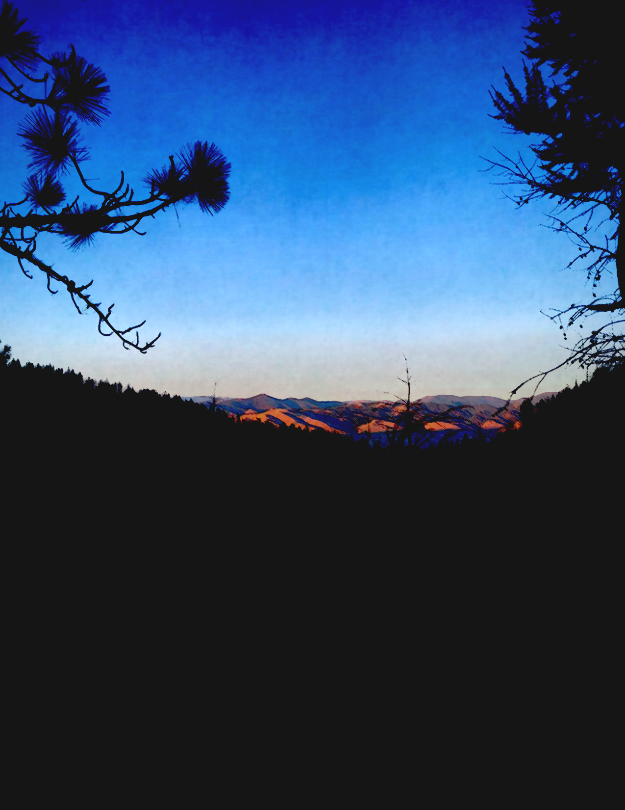
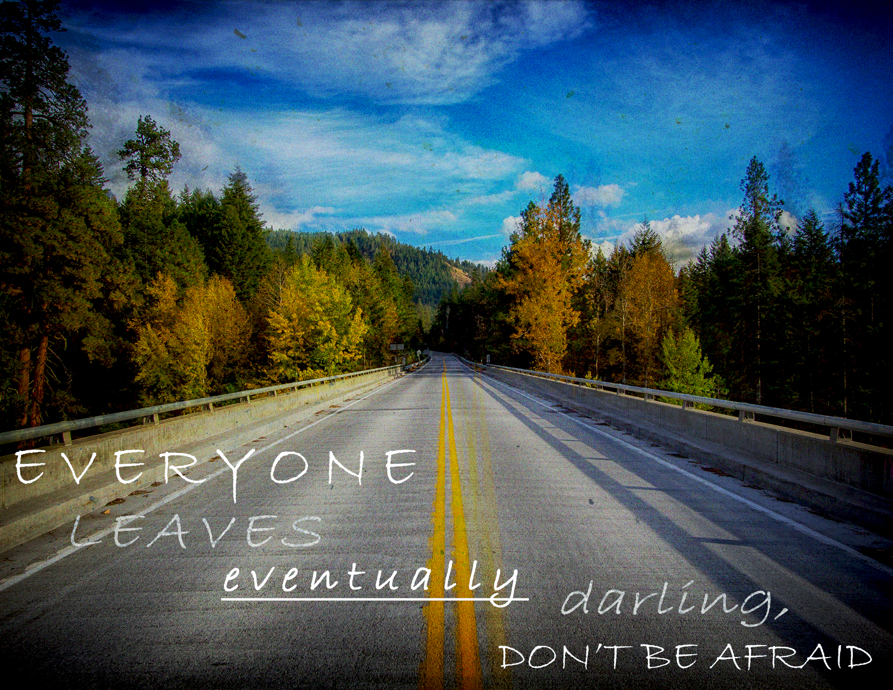
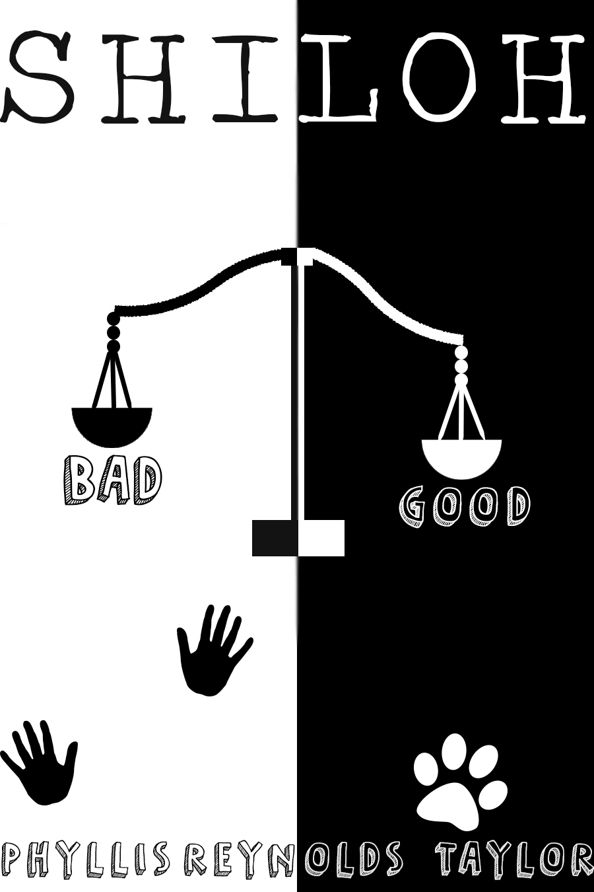
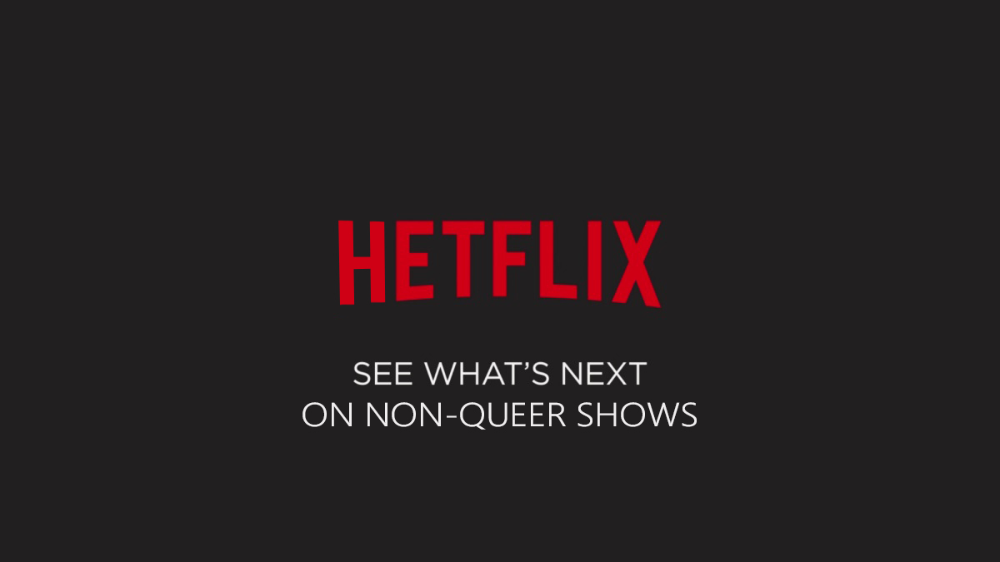

My Portfolio

I made this album cover in my photoshop class based on Declan McKenna's album "Zeros"

I manipulated this photo I took and made it feel gloomy. We learned how colors and filters can depict emotion.

I manipulated this photo I took and made it feel melancholic. I got the prompt from another student in my class.

I created this in photoshop. We were learning about typography so I added lyrics from a song I like and created the background.
In the photoshop class, I created ten logos for the Missoula Airport. This was the final one I created after learning and advancing my skills.

I created a book cover for my favorite book in the fifth grade called "Shiloh."

I created this adbust of Netflix's logo. Netflix has recently cancelled a lot of its queer-led shows, despite these shows having a popular fanbase. It's led to backlash since representation of the queer community is already so minimal.

I created this gif animation in my photoshop class too. I used inspiration from the scary movie It.
.png)
I used a software called Reaper to make this sound project. I recreated a house party scene from a show called "Euphoria."
.png)
.png)
.png)
These are a few screenshots of my final TouchDesigner project for my Principles of Interactive Media class. It's an outrun landscape that has moving stars and buildings that blow up and change colors.
.png)
This is a screenshot of another TouchDesigner project. I made a planet that rotates.
.png)
This is a screenshot of another TouchDesigner project. I made a retro outrun landscape. This project was research for my final.
.png)
This is a screenshot of a project I made using TouchDesigner. This project is a tunnel that rotates quickly and flashes the words "Where are we?"
.png)
This is a screenshot of a project I made in TouchDesigner that is a texture that gradually is filled in. It's interactive and moves when you press the number 1 on your keyboard. I used this as research for my final as well.
My First Page
My Second Page
My Contact Page